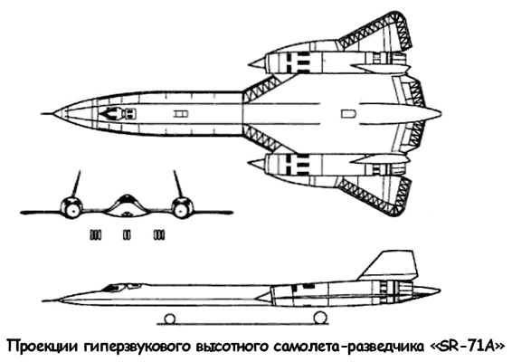

Самолет-разведчик «SR-71»
Заказчиком «А-12» выступало ЦРУ, поэтому ударные возможности для этой машины представлялись излишними. Однако Келли Джонсон хотел в полной мере реализовать потенциал своего детища он считал, что ВВС также необходим скоростной высотный разведчик, обладающий способностью наносить удары по наземным целям. Обсуждение возможности создания такого самолета велось, начиная с 1958 года, но официальное предложение фирме «Локхид» поступило лишь в марте 1962 года К этому времени в «Сканк Уоркс» над проектом стратегического разведчика-бомбардировщика «Р-12» («R-12») работали уже больше года. Макеты двух альтернативных вариантов («R-12» и «RS-12») были готовы уже в апреле, а 4 июня их осмотрели высшие офицеры ВВС во главе с командующим, генералом Кертиссом Ли Меем. Ли Мей выступал против планов Джонсона, считая проект «RS-12» дублером бомбардировщика «ХВ-70 Валькирия». Конец спору положил министр обороны Макнамара, «похоронивший» обе программы.

Однако «похороны» «RS-12» оказались преждевременными — хитрый Джонсон изменил расшифровку «RS» с «Reconnaissance/Strike» («Разведывательный/Ударный») на «Reconnaissance Strategic» («Стратегический Разведчик») и продолжил разработку «универсального А-12», как он сам называл «RS-12».
Именно об «RS-12» говорил в своей июльской речи 1964 года президент США Джонсон, — самолет в тексте фигурировал под обозначением «РС-71» («RS-71»), но президент перепутал буквы: с его языка слетело «SR» и прочно «прилипло» к разведчику. А индекс «71» обозначал следующий за разведывательным вариантом «RS-70» бомбардировщика «Валькирия».
Контракт на изготовление шести прототипов «универсального А-12» фирма «Локхид» заключила в конце декабря 1962 года. Самолеты эти предназначались ЦРУ, а не ВВС, — военные все еще не могли решить, нужен им такой самолет или нет.
В начале 60-х годов в Штатах велись жаркие споры вокруг дальнейших путей развития стратегической разведки.
ВВС не соглашались с существовавшим положением, когда стратегические самолеты-разведчики находились в ведении ЦРУ; в свою очередь, в Управлении нашли себе «новую игрушку» — спутники-шпионы с фотоаппаратурой, обладающей высокой разрешающей способностью. В какой-то момент стороны пришли к консенсусу: все самолетыразведчики переходят в ведение ВВС, спутники же достаются ЦРУ.
Хотя ЦРУ сумело сохранить за собой уже построенные «А-12», наращивание численного парка этих машин исключалось.
Не хватало средств даже на поддержание разведчиков в состоянии, пригодном к полетам. Окончательно в свои руки программу «R-12» ВВС взяли весной 1963 года.
Главным отличием «R-12» от «А-12» являлось наличие второго члена экипажа, кабину которого оборудовали в секции, отведенной на «А-12» под отсек с фотооборудованием.
Ведущим летчиком-испытателем «SR-71» был назначен «фирменный» пилот «Сканк Уоркс» Боб Гиллиленд. 22 декабря 1964 года состоялся первый успешный полет.
Гиллиленд выписал в небе континентальной части США огромный круг, достигнув скорости в 1,5 Маха и высоты 15 244 метров.
Но были и проблемы. На первых порах особенно досаждала инженерам течь магистралей гидравлической и топливной систем. Тем не менее летом 1965 года удалось завершить большую часть программы. В целом результаты испытаний удовлетворили заказчика, за исключением дальности полета, которая оказалась на 25 % меньше требуемой.
В январе 1966 года начались испытания учебно-тренировочной модификации «СР-71Б» («SR-71B»).
Тогда же программа «SR-71» понесла первую потерю: 25 января разбился третий опытный разведчик. Из-за отказа системы управления воздухозаборником самолет потерял управление в полете на высоте 24 километров. Летчику Биллу Уиверу удалось спастись; причем Уивер потерял сознание и не помнил, каким образом он очутился под стропами парашюта, ведь его катапультируемое кресло осталось в самолете.
Видимо, из-за высокой перегрузки поток воздуха сорвал фонарь кабины и буквально вырвал летчика из кресла. Второй член экипажа, Джим Зауэр, при катапультировании погиб.
Другое тяжелое происшествие произошло 13 апреля 1967 года: «SR-71» с бортовым номером «17» потерпел аварию недалеко от Лас-Вегаса, оба члена экипажа успешно катапультировались. Причина вновь была связана с работой силовой установки. 25 ноября 1967 года в Неваде разбился 16-й построенный самолет. Экипаж в ночном полете неправильно считал показания авиагоризонта и потерял ориентацию в пространстве.
Летчики спаслись, однако очередной разведчик пришлось списать.
Последняя в ходе летных испытаний авария произошла 18 декабря 1969 года. Полет проводился в рамках отработки бортовой системы радиоэлектронной борьбы. Вскоре после выхода на сверхзвук экипаж услышал сильный хлопок, после чего произошло резкое падение тяги двигателей и потеря управляемости самолетом. Разведчик вышел на большие углы атаки и свалился на крыло. Через 11 секунд после хлопка пилоты катапультировались. Причина хлопка или взрыва так и осталась невыясненной. Вероятная причина катастрофы, скорее всего, опять была связана с работой воздухозаборника.
При незапуске воздухозаборника возникает очень большая асимметрия тяги двигателей. Самолет кренится и сваливается на крыло. Данная проблема проявилась еще на стадии проектирования «А-12». Чтобы избежать асимметрии тяги, рассматривался даже вариант установки обоих двигателей в фюзеляже, однако в конечном итоге было решено проблемы асимметрии тяги и «незапуска» воздухозаборника отдать «на откуп» автоматической системе управления. Однако «незапуск» воздухозаборников так и остался самым уязвимым местом всех самолетов серии «А-12». Со временем эту проблему удалось разрешить лишь частично путем подбора коэффициентов регулирования в системе управления и замене аналоговой системы на цифровую.
К концу 1967 года фирма «Локхид» передала ВВС последний, 31-й, заказанный разведчик «SR-71»; линия по их производству была законсервирована. Возможно, этого делать и не стоило, так как катастрофы и происшествия с разведчиками продолжалась.
Подготовка к принятию на вооружение ВВС разведчиков «RS-71» развернулась вовсю летом 1964 года; местом их дислокации выбрали авиабазу Бил (Beale AFB). Официальной датой формирования 4200-го стратегического разведывательного авиакрыла считается 14 декабря 1964 года, в командование крылом вступил полковник Дуглас Нельсон.
Самолеты-разведчики «SR-71» использовались при боевых действиях во Вьетнаме (1968–1973 годы) и на Ближнем Востоке (1973–1974 годы). Разведывательные полеты осуществлялись вдоль границы Северной Кореи (1977 год), над Кубой (1978–1979 годы), Европой (1979–1985 годы), Китаем (1980–1981 годы), Никарагуа (1984 год).
Ни один из самолетов-разведчиков не был сбит. Вьетнамцы и китайцы выпускали до сотни ракет зенитного комплекса «С-75», пытаясь «достать» «SR-71», но скорость и высота нового разведчика были слишком велики, чтобы его можно было перехватить. Все потери 4200-го авиакрыла произошли в результате неисправностей или ошибок пилотов.
Количество боеспособных разведчиков уменьшалось на протяжении почти двух десятков лет их эксплуатации.
И главной причиной «убыли» были вовсе не катастрофы, а огромная стоимость эксплуатации и нехватка запасных частей.
Расходы на содержание одной эскадрильи «SR-71» равнялись затратам на поддержание в летном состоянии двух авиакрыльев тактических истребителей; затраты на один разведывательный полет, с учетом предполетного технического обслуживания, привлечения к выполнению задания самолетовзаправщиков составляли 8 миллионов долларов.
Изготавливать выходившие из строя узлы и агрегаты разведчиков не представлялось возможным, поскольку всю технологическую оснастку давно продали на металлолом; в результате пришлось пойти на «каннибализацию» через снятие всего ценного с «недобитых» в авариях машин. Кроме того, на вооружении советской армии появился зенитно-ракетный комплекс «Круг-М», который был способен сбивать цели с характеристиками «SR-71».
В общем, к концу 80-х годов вопрос о снятии «SR-71» с вооружения назрел. Многие офицеры ВВС, причастные к стратегической разведке, отчаянно боролись за продление срока службы «SR-71A». Тем не менее весной 1989 года такое решение было принято, и с 1 октября 1989 года разведчики были сняты с вооружения.
Торжественные проводы разведчиков на «пенсию» состоялись на авиабазе Бил в начале марта 1990 года. На взлетную полосу выкатили все 11 стратегических разведчиков, сохранившихся на тот момент. Сенат США постановил в мае 1990 года передать на консервацию шесть самолетов и шесть комплектов разведывательного оборудования с возможностью возобновления эксплуатации через 90 дней после принятия соответствующего решения. Но Пентагон оставил у себя лишь три машины, еще три передали НАСА.
Министр обороны Чейни сумел добиться пересмотра решения, принятого сенатом: «Просто невозможно держать в постоянной готовности летчиков, специалистов по планированию полетов и обслуживающий персонал без нового, постоянного, задания. Мы не сможем больше эксплуатировать самолеты SR-71».
Чейни ошибался, как ошибались и те, кто принимал решение о выводе разведчиков из эксплуатации. Операция «Буря в пустыне» в полной мере продемонстрировала силу аргументов защитников стратегических разведчиков — спутники так и не смогли заменить самолеты.